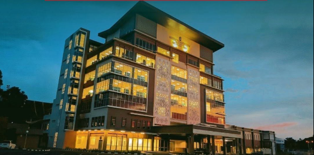

IPG Kampus Gaya, Kota Kinabalu
P.O. Box 10491, 88805 Kota Kinabalu, Sabah, Malaysia.

IPG KAMPUS GAYA · KOTA KINABALU
🅿️
ParkingParking arrangements are subject to campus instructions.
📶
FacilitiesMain hall and session facilities; Wi-Fi and workshop room details will be confirmed.
🍽️
RefreshmentsRefreshment details will be confirmed by the organising committee.